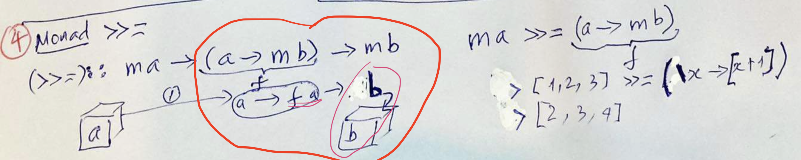

(Vi) Monad trong haskell
Link youtube
Từ cụ thể đến tổng quát hoá
Tham khảo file
maybePlus
eitherPlus
listPlus
Chúng ta thấy các pattern sau:
andThen :: Maybe a -> (a -> Maybe b) -> Maybe b
andThen' :: (Either e a) -> (a -> Either e b) -> (Either e b)
andThen'' :: [a] -> (a -> [b]) -> [b]
[] a -> (a -> [] b) -> [] bQua đó chúng ta có thể tổng quát hoá (generalization)
bind :: Monad m => m a -> (a -> m b) -> m b
(>>=) :: Monad m => m a -> (a -> m b) -> m bNếu chúng ta có thể viết ngược lại
flip bind hay (=<<)
(=<<) :: Monad m => (a -> m b) -> m a -> m b
fmap :: Functor f => (a -> b) -> f a -> f b (*)Nếu ta thay
f = m
b = m b'vào (*)
fmap :: Functor f => (a -> m b') -> m a -> m (m b')
(=<<) :: Monad m => (a -> m b) -> m a -> m bNếu chúng ta có hàm số nào đó join :: m (m b') -> m b'
fmap :: Functor f => (a -> m b') -> m a -> m (m b')
join :: m (m b') -> m b'
join (fmap) :: (a -> m b') -> m a -> m b'Như thế, hàm flip bind (=<<) là sự kết hợp giữa fmap và join, có thể viết (=<<) = (join .) . fmap theo cách áp dụng function composition
Chứng minh (=<<) = (join .) . fmap
(=<<) f ma = join (fmap f ma)
(=<<) f ma = join ((fmap f) ma) -- function application associates to the left
(=<<) f ma = join . (fmap f) ma -- function composition g ( h x) with g = join, h = (fmap f)
(=<<) f = join . (fmap f) -- pointfree on ma
(=<<) f = (join .) (fmap f) -- function application associates to the left
(=<<) f = ((join .) . fmap) f -- function composition g (h x), g = (join .), h = fmap
(=<<) = (join .) . fmap -- pointfree on f
(=<<) = (join .) . fmap -- QEDNgoài lý do tổng quát hoá, Monad còn có điểm gì khác hay không??
Xét đọan mã sau về hàm băm (md5 hash) đọc khóa bí mật từ file
Viết bằng ruby
# pure
def integrity_checksum(input)
Digest::MD5.base64digest(input)
end
# impure
def impure_integrity_checksum(input)
k = File.read("~/.secret-key")
Digest::MD5.base64digest(k+input)
endViết lại bằng haskell
-- pure
integrityChecksum ::
ByteString
-> ByteString
integrityChecksum input = MD5.hash input
-- impure with explicit side effect
integrityChecksum' ::
ByteString
-> IO ByteString
integrityChecksum' input =
readFile "~/.secret-key"
>>= \k ->
pure (MD5.hash(k <> input))
-- desugar way, impure with explicit side effect
integrityChecksum'' ::
ByteString
-> IO ByteString
integrityChecksum'' input = do
k <- readFile "~/.secret-key"
pure (MD5.hash(k <> input))Như thế, chúng ta lường trưóc được rằng: hàm integrityChecksum sẽ có side effect.
Chúng ta sẽ tách bạch các hàm ko có side effect và các hàm có side effect, như thế khi code sẽ giảm thiêủ lỗi, code dễ đọc hơn.
Monad type class
class Applicative m => Monad m where
(>>=) :: m a -> (a -> m b) -> m b
(>>) :: m a -> m b -> m b
return :: a -> m a
{-# MINIMAL (>>=) #-}Monad laws
Mọi Monad instances phải thỏa mãn các luật sau:
- Left identity(đồng nhất trái):
return a >>= h ≡ h a- Right identity(đồng nhất phải):
m >>= return ≡ m- Associativity(tính kết hợp):
(m >>= g) >>= h ≡ m >>= (\x -> g x >>= h)Trong Control.Monad, chúng ta có 1 toán tử (>=>) goị là monad-composition hoặc là Kleisli-composition operator có signature như sau:
infixr 1 >=>
(>=>) ::
Monad m =>
(a -> m b)
-> (b -> m c)
-> (a -> m c)
f >=> g =
\x -> f x >>= gNhư thế, tính chất kết hợp
(m >>= g) >>= h ≡ m >>= (\x -> g x >>= h)chúng ta có thể viết lại như sau:
(m >=> g) >=> h ≡ m >=> (g >=> h)Cách hiểu nôm na, mù mờ và chưa đúng về monad
.
Tham khảo
- Function application associates to the left
- Why Is Haskell So Hard To Learn? (And How To Deal With It) by Saurabh Nanda #FnConf19
- Haskell Beginners 2022: Lecture 4
- https://wiki.haskell.org/Monad_laws
TODO
Inside IO monad !!
Giải thích: “A monad is just a monoid in the category of endofunctors, what’s the problem?”
endofunctor category
monoidal